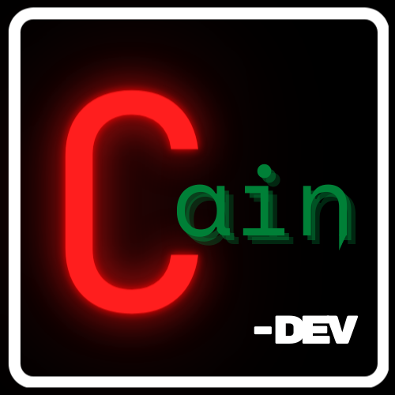

Instalação Básica de Sistemas - Introdução
Instalação Básica de Sistemas - Windows
Instalação Básica de Sistemas - Linux (padrão)
Instalação Básica de Sistemas - Arch Linux
Instalação Básica de Sistemas - FreeBSD
Instalação Básica de Sistemas - OpenBSD
Instalação Básica de Sistemas - Batocera
Instalação Avançada de Sistemas - Introdução ao Dual Boot
Otimização (Roteador, Windows e Linux/BSD's)
Windows 10 Mais Leve? Conheça o Win10 Ameliorated Scripts
Alternativas de Software Livre
Emulação com o Retroarch
Ambientes Gráficos para Linux/BSD's - Básico
Setup do Arch Linux em Wayland com Sway e Pipewire
O que não te contaram sobre a Apple
O básico de Segurança das Operações
хардбас